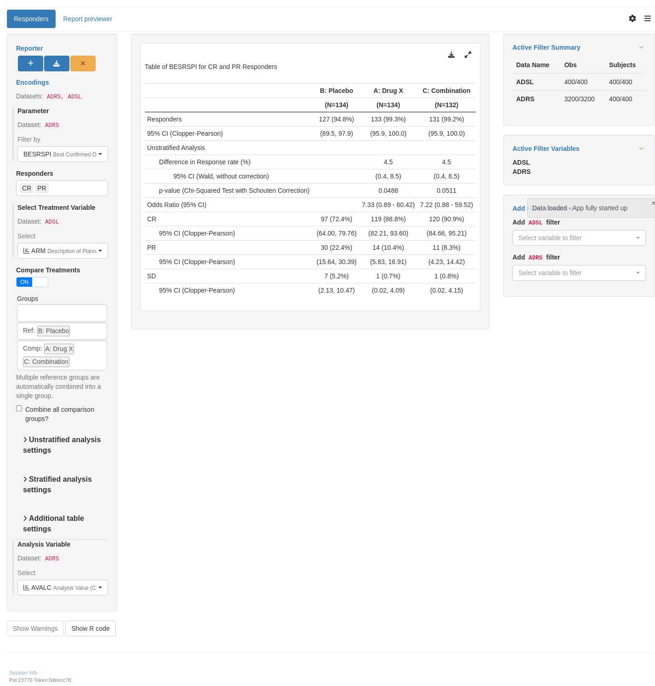

RSPT01
Best Overall Response
Data pre-processing is done to label the analysis value (AVALC) so as to improve the readability of the output table. In addition, the response is binary defined (is_rsp, responder yes/no) depending on the analysis value. Finally, for comparison purposes, the reference arm is specified.
Output
The tabulation layout is built in layers for the analysis of overall response and applied to the pre-processed dataset.
Code
lyt_01 <- basic_table(show_colcounts = TRUE) %>%
split_cols_by(var = "ARM", ref_group = "A: Drug X") %>%
estimate_proportion(
vars = "is_rsp",
table_names = "est_prop"
) %>%
estimate_proportion_diff(
vars = "is_rsp",
show_labels = "visible",
var_labels = "Unstratified Analysis",
table_names = "est_prop_diff"
) %>%
test_proportion_diff(
vars = "is_rsp",
table_names = "test_prop_diff"
) %>%
estimate_odds_ratio(
vars = "is_rsp",
table_names = "est_or"
) %>%
estimate_multinomial_response(var = "rsp_lab")
result <- build_table(lyt = lyt_01, df = anl)
result A: Drug X B: Placebo C: Combination
(N=134) (N=134) (N=132)
—————————————————————————————————————————————————————————————————————————————————————————————
Responders 100 (74.6%) 84 (62.7%) 81 (61.4%)
95% CI (Wald, with correction) (66.9, 82.4) (54.1, 71.2) (52.7, 70.0)
Unstratified Analysis
Difference in Response rate (%) -11.9 -13.3
95% CI (Wald, with correction) (-23.7, -0.2) (-25.1, -1.4)
p-value (Chi-Squared Test) 0.0351 0.0204
Odds Ratio (95% CI) 0.57 (0.34 - 0.96) 0.54 (0.32 - 0.91)
Complete Response (CR) 60 (44.8%) 47 (35.1%) 57 (43.2%)
95% CI (Wald, with correction) (35.98, 53.57) (26.62, 43.53) (34.35, 52.01)
Partial Response (PR) 40 (29.9%) 37 (27.6%) 24 (18.2%)
95% CI (Wald, with correction) (21.73, 37.97) (19.67, 35.55) (11.22, 25.14)
Stable Disease (SD) 9 (6.7%) 22 (16.4%) 13 (9.8%)
95% CI (Wald, with correction) (2.11, 11.33) (9.77, 23.06) (4.39, 15.31)
Progressive Disease (PD) 24 (17.9%) 16 (11.9%) 33 (25.0%)
95% CI (Wald, with correction) (11.05, 24.78) (6.08, 17.80) (17.23, 32.77)
Not Evaluable (NE) 1 (0.7%) 12 (9.0%) 5 (3.8%)
95% CI (Wald, with correction) (0.00, 2.58) (3.75, 14.16) (0.15, 7.42) Remove (or add) rows of results by removing/adding the corresponding layers from the layout. For instance, the odds-ratio row is removed by simply removing the estimate_odds_ratio call:
Code
lyt_02 <- basic_table(show_colcounts = TRUE) %>%
split_cols_by(var = "ARM", ref_group = "A: Drug X") %>%
estimate_proportion(
vars = "is_rsp",
table_names = "est_prop"
) %>%
estimate_proportion_diff(
vars = "is_rsp",
show_labels = "visible",
var_labels = "Unstratified Analysis",
table_names = "est_prop_diff"
) %>%
test_proportion_diff(
vars = "is_rsp",
table_names = "test_prop"
) %>%
estimate_multinomial_response(var = "rsp_lab")
result <- build_table(lyt = lyt_02, df = anl)
result A: Drug X B: Placebo C: Combination
(N=134) (N=134) (N=132)
—————————————————————————————————————————————————————————————————————————————————————
Responders 100 (74.6%) 84 (62.7%) 81 (61.4%)
95% CI (Wald, with correction) (66.9, 82.4) (54.1, 71.2) (52.7, 70.0)
Unstratified Analysis
Difference in Response rate (%) -11.9 -13.3
95% CI (Wald, with correction) (-23.7, -0.2) (-25.1, -1.4)
p-value (Chi-Squared Test) 0.0351 0.0204
Complete Response (CR) 60 (44.8%) 47 (35.1%) 57 (43.2%)
95% CI (Wald, with correction) (35.98, 53.57) (26.62, 43.53) (34.35, 52.01)
Partial Response (PR) 40 (29.9%) 37 (27.6%) 24 (18.2%)
95% CI (Wald, with correction) (21.73, 37.97) (19.67, 35.55) (11.22, 25.14)
Stable Disease (SD) 9 (6.7%) 22 (16.4%) 13 (9.8%)
95% CI (Wald, with correction) (2.11, 11.33) (9.77, 23.06) (4.39, 15.31)
Progressive Disease (PD) 24 (17.9%) 16 (11.9%) 33 (25.0%)
95% CI (Wald, with correction) (11.05, 24.78) (6.08, 17.80) (17.23, 32.77)
Not Evaluable (NE) 1 (0.7%) 12 (9.0%) 5 (3.8%)
95% CI (Wald, with correction) (0.00, 2.58) (3.75, 14.16) (0.15, 7.42) The confidence level is controlled by the conf_level parameter to the estimation functions. Similarly, the methods for tests and confidence interval can be modified (see ?estimate_proportion_diff).
Code
conf_level <- 0.90
lyt_03 <- basic_table(show_colcounts = TRUE) %>%
split_cols_by(var = "ARM", ref_group = "A: Drug X") %>%
estimate_proportion(
vars = "is_rsp",
conf_level = conf_level,
method = "clopper-pearson",
table_names = "est_prop"
) %>%
estimate_proportion_diff(
vars = "is_rsp",
show_labels = "visible",
var_labels = "Unstratified Analysis",
conf_level = conf_level,
method = "ha",
table_names = "est_prop_diff"
) %>%
test_proportion_diff(
vars = "is_rsp",
method = "fisher",
table_names = "test_prop"
) %>%
estimate_odds_ratio(
vars = "is_rsp",
conf_level = conf_level,
table_names = "est_or"
) %>%
estimate_multinomial_response(
var = "rsp_lab",
conf_level = conf_level,
method = "clopper-pearson"
)
result <- build_table(lyt = lyt_03, df = anl)
result A: Drug X B: Placebo C: Combination
(N=134) (N=134) (N=132)
————————————————————————————————————————————————————————————————————————————————————————————
Responders 100 (74.6%) 84 (62.7%) 81 (61.4%)
90% CI (Clopper-Pearson) (67.7, 80.7) (55.3, 69.7) (53.9, 68.5)
Unstratified Analysis
Difference in Response rate (%) -11.9 -13.3
90% CI (Anderson-Hauck) (-21.6, -2.3) (-23.0, -3.5)
p-value (Fisher's Exact Test) 0.0479 0.0253
Odds Ratio (90% CI) 0.57 (0.37 - 0.89) 0.54 (0.35 - 0.84)
Complete Response (CR) 60 (44.8%) 47 (35.1%) 57 (43.2%)
90% CI (Clopper-Pearson) (37.48, 52.25) (28.22, 42.43) (35.88, 50.71)
Partial Response (PR) 40 (29.9%) 37 (27.6%) 24 (18.2%)
90% CI (Clopper-Pearson) (23.36, 37.02) (21.31, 34.67) (12.87, 24.61)
Stable Disease (SD) 9 (6.7%) 22 (16.4%) 13 (9.8%)
90% CI (Clopper-Pearson) (3.55, 11.43) (11.38, 22.61) (5.92, 15.20)
Progressive Disease (PD) 24 (17.9%) 16 (11.9%) 33 (25.0%)
90% CI (Clopper-Pearson) (12.67, 24.25) (7.63, 17.57) (18.90, 31.97)
Not Evaluable (NE) 1 (0.7%) 12 (9.0%) 5 (3.8%)
90% CI (Clopper-Pearson) (0.04, 3.49) (5.25, 14.11) (1.50, 7.80) The stratified analysis section can be added by defining the analyses needed with control_binary_comparison for the argument strat_analysis and identifying the stratification variables to use.
Code
strata <- "STRATA1"
lyt_04 <- basic_table(show_colcounts = TRUE) %>%
split_cols_by(var = "ARM", ref_group = "A: Drug X") %>%
estimate_proportion(
vars = "is_rsp",
table_names = "est_prop"
) %>%
estimate_proportion_diff(
vars = "is_rsp",
show_labels = "visible",
var_labels = "Unstratified Analysis",
table_names = "est_prop_diff"
) %>%
test_proportion_diff(
vars = "is_rsp",
table_names = "test_prop"
) %>%
estimate_odds_ratio(
vars = "is_rsp",
table_names = "est_or"
) %>%
estimate_proportion_diff(
vars = "is_rsp",
show_labels = "visible",
var_labels = "Stratified Analysis",
method = "cmh",
variables = list(strata = strata),
table_names = "est_prop_diff_strat"
) %>%
test_proportion_diff(
vars = "is_rsp",
method = "cmh",
variables = list(strata = strata),
table_names = "test_prop_strat"
) %>%
estimate_odds_ratio(
vars = "is_rsp",
variables = list(strata = strata, arm = "ARM"),
table_names = "est_or_strat"
) %>%
estimate_multinomial_response(var = "rsp_lab")
result <- build_table(lyt = lyt_04, df = anl)
result A: Drug X B: Placebo C: Combination
(N=134) (N=134) (N=132)
———————————————————————————————————————————————————————————————————————————————————————————————————
Responders 100 (74.6%) 84 (62.7%) 81 (61.4%)
95% CI (Wald, with correction) (66.9, 82.4) (54.1, 71.2) (52.7, 70.0)
Unstratified Analysis
Difference in Response rate (%) -11.9 -13.3
95% CI (Wald, with correction) (-23.7, -0.2) (-25.1, -1.4)
p-value (Chi-Squared Test) 0.0351 0.0204
Odds Ratio (95% CI) 0.57 (0.34 - 0.96) 0.54 (0.32 - 0.91)
Stratified Analysis
Difference in Response rate (%) -11.9 -13.5
95% CI (CMH, without correction) (-22.7, -1.0) (-24.5, -2.5)
p-value (Cochran-Mantel-Haenszel Test) 0.0366 0.0180
Odds Ratio (95% CI) 0.57 (0.34 - 0.96) 0.54 (0.32 - 0.90)
Complete Response (CR) 60 (44.8%) 47 (35.1%) 57 (43.2%)
95% CI (Wald, with correction) (35.98, 53.57) (26.62, 43.53) (34.35, 52.01)
Partial Response (PR) 40 (29.9%) 37 (27.6%) 24 (18.2%)
95% CI (Wald, with correction) (21.73, 37.97) (19.67, 35.55) (11.22, 25.14)
Stable Disease (SD) 9 (6.7%) 22 (16.4%) 13 (9.8%)
95% CI (Wald, with correction) (2.11, 11.33) (9.77, 23.06) (4.39, 15.31)
Progressive Disease (PD) 24 (17.9%) 16 (11.9%) 33 (25.0%)
95% CI (Wald, with correction) (11.05, 24.78) (6.08, 17.80) (17.23, 32.77)
Not Evaluable (NE) 1 (0.7%) 12 (9.0%) 5 (3.8%)
95% CI (Wald, with correction) (0.00, 2.58) (3.75, 14.16) (0.15, 7.42) The definition of responders is realized during the pre-processing step. The layout does not need to be modified and can be reused.
Code
anl <- anl_adsl %>%
left_join(anl_adrs, by = c("STUDYID", "USUBJID")) %>%
mutate(rsp_lab = d_onco_rsp_label(AVALC)) %>%
mutate(is_rsp = AVALC == "CR") %>%
mutate(ARM = relevel(ARM, ref = "A: Drug X")) %>%
var_relabel(ARM = "Description of Planned Arm")
result <- build_table(lyt = lyt_01, df = anl)
result A: Drug X B: Placebo C: Combination
(N=134) (N=134) (N=132)
—————————————————————————————————————————————————————————————————————————————————————————————
Responders 60 (44.8%) 47 (35.1%) 57 (43.2%)
95% CI (Wald, with correction) (36.0, 53.6) (26.6, 43.5) (34.4, 52.0)
Unstratified Analysis
Difference in Response rate (%) -9.7 -1.6
95% CI (Wald, with correction) (-22.1, 2.7) (-14.3, 11.1)
p-value (Chi-Squared Test) 0.1049 0.7934
Odds Ratio (95% CI) 0.67 (0.41 - 1.09) 0.94 (0.58 - 1.52)
Complete Response (CR) 60 (44.8%) 47 (35.1%) 57 (43.2%)
95% CI (Wald, with correction) (35.98, 53.57) (26.62, 43.53) (34.35, 52.01)
Partial Response (PR) 40 (29.9%) 37 (27.6%) 24 (18.2%)
95% CI (Wald, with correction) (21.73, 37.97) (19.67, 35.55) (11.22, 25.14)
Stable Disease (SD) 9 (6.7%) 22 (16.4%) 13 (9.8%)
95% CI (Wald, with correction) (2.11, 11.33) (9.77, 23.06) (4.39, 15.31)
Progressive Disease (PD) 24 (17.9%) 16 (11.9%) 33 (25.0%)
95% CI (Wald, with correction) (11.05, 24.78) (6.08, 17.80) (17.23, 32.77)
Not Evaluable (NE) 1 (0.7%) 12 (9.0%) 5 (3.8%)
95% CI (Wald, with correction) (0.00, 2.58) (3.75, 14.16) (0.15, 7.42) Similarly to in the previous tab, redefinition or relabeling of the result is a pre-processing step and the original table layout can be reused.
Code
anl <- anl_adsl %>%
left_join(anl_adrs, by = c("STUDYID", "USUBJID")) %>%
mutate(rsp_lab = as.character(d_onco_rsp_label(AVALC))) %>%
mutate(
rsp_lab = case_when(
rsp_lab == "Complete Response (CR)" ~ "No Progression",
rsp_lab == "Partial Response (PR)" ~ "No Progression",
rsp_lab == "Stable Disease (SD)" ~ "No Progression",
TRUE ~ rsp_lab
)
) %>%
mutate(is_rsp = rsp_lab %in% "No Progression") %>%
mutate(ARM = relevel(ARM, ref = "A: Drug X")) %>%
var_relabel(ARM = "Description of Planned Arm")
result <- build_table(lyt = lyt_01, df = anl)
result A: Drug X B: Placebo C: Combination
(N=134) (N=134) (N=132)
—————————————————————————————————————————————————————————————————————————————————————————————
Responders 109 (81.3%) 106 (79.1%) 94 (71.2%)
95% CI (Wald, with correction) (74.4, 88.3) (71.8, 86.4) (63.1, 79.3)
Unstratified Analysis
Difference in Response rate (%) -2.2 -10.1
95% CI (Wald, with correction) (-12.5, 8.0) (-21.0, 0.8)
p-value (Chi-Squared Test) 0.6455 0.0520
Odds Ratio (95% CI) 0.87 (0.48 - 1.59) 0.57 (0.32 - 1.01)
Progressive Disease (PD) 24 (17.9%) 16 (11.9%) 33 (25.0%)
95% CI (Wald, with correction) (11.05, 24.78) (6.08, 17.80) (17.23, 32.77)
No Progression 109 (81.3%) 106 (79.1%) 94 (71.2%)
95% CI (Wald, with correction) (74.37, 88.31) (71.85, 86.36) (63.11, 79.31)
Not Evaluable (NE) 1 (0.7%) 12 (9.0%) 5 (3.8%)
95% CI (Wald, with correction) (0.00, 2.58) (3.75, 14.16) (0.15, 7.42) Code
library(dplyr)
library(tern)
adsl <- random.cdisc.data::cadsl
adrs <- random.cdisc.data::cadrs
# Ensure character variables are converted to factors and empty strings and NAs are explicit missing levels.
adsl <- df_explicit_na(adsl)
adrs <- df_explicit_na(adrs)
anl_adrs <- adrs %>%
filter(PARAMCD == "INVET") %>%
select(STUDYID, USUBJID, PARAMCD, AVISIT, AVALC)
anl_adsl <- adsl %>%
select(STUDYID, USUBJID, ARM, STRATA1)
teal App
Code
library(teal.modules.clinical)
## Data reproducible code
data <- teal_data()
data <- within(data, {
library(dplyr)
ADSL <- random.cdisc.data::cadsl
ADRS <- random.cdisc.data::cadrs
# Ensure character variables are converted to factors and empty strings and NAs are explicit missing levels.
ADSL <- df_explicit_na(ADSL)
ADRS <- df_explicit_na(ADRS)
ADSL <- ADSL %>%
mutate(Dum_ARM = factor(rep("Single ARM", nrow(.))))
ADRS <- ADRS %>%
mutate(Dum_ARM = factor(rep("Single ARM", nrow(.))))
})
datanames <- c("ADSL", "ADRS")
datanames(data) <- datanames
join_keys(data) <- default_cdisc_join_keys[datanames]
## Reusable Configuration For Modules
ADRS <- data[["ADRS"]]
arm_ref_comp <- list(
ACTARMCD = list(
ref = "ARM B",
comp = c("ARM A", "ARM C")
),
ARM = list(
ref = "B: Placebo",
comp = c("A: Drug X", "C: Combination")
)
)
## Setup App
app <- init(
data = data,
modules = modules(
tm_t_binary_outcome(
label = "Responders",
dataname = "ADRS",
paramcd = choices_selected(
choices = value_choices(ADRS, "PARAMCD", "PARAM"),
selected = "BESRSPI"
),
arm_var = choices_selected(
choices = variable_choices(ADRS, c("ARM", "ARMCD", "ACTARMCD", "Dum_ARM")),
selected = "ARM"
),
arm_ref_comp = arm_ref_comp,
strata_var = choices_selected(
choices = variable_choices(ADRS, c("SEX", "BMRKR2")),
select = NULL
),
rsp_table = TRUE
)
)
)
shinyApp(app$ui, app$server)
shinylive allow you to modify to run shiny application entirely in the web browser. Modify the code below and click re-run the app to see the results. The performance is slighly worse and some of the features (e.g. downloading) might not work at all.
#| '!! shinylive warning !!': |
#| shinylive does not work in self-contained HTML documents.
#| Please set `embed-resources: false` in your metadata.
#| standalone: true
#| viewerHeight: 800
#| editorHeight: 200
#| components: [viewer, editor]
#| layout: vertical
# -- WEBR HELPERS --
options(webr_pkg_repos = c("r-universe" = "https://insightsengineering.r-universe.dev", getOption("webr_pkg_repos")))
# -- APP CODE --
library(teal.modules.clinical)
## Data reproducible code
data <- teal_data()
data <- within(data, {
library(dplyr)
ADSL <- random.cdisc.data::cadsl
ADRS <- random.cdisc.data::cadrs
# Ensure character variables are converted to factors and empty strings and NAs are explicit missing levels.
ADSL <- df_explicit_na(ADSL)
ADRS <- df_explicit_na(ADRS)
ADSL <- ADSL %>%
mutate(Dum_ARM = factor(rep("Single ARM", nrow(.))))
ADRS <- ADRS %>%
mutate(Dum_ARM = factor(rep("Single ARM", nrow(.))))
})
datanames <- c("ADSL", "ADRS")
datanames(data) <- datanames
join_keys(data) <- default_cdisc_join_keys[datanames]
## Reusable Configuration For Modules
ADRS <- data[["ADRS"]]
arm_ref_comp <- list(
ACTARMCD = list(
ref = "ARM B",
comp = c("ARM A", "ARM C")
),
ARM = list(
ref = "B: Placebo",
comp = c("A: Drug X", "C: Combination")
)
)
## Setup App
app <- init(
data = data,
modules = modules(
tm_t_binary_outcome(
label = "Responders",
dataname = "ADRS",
paramcd = choices_selected(
choices = value_choices(ADRS, "PARAMCD", "PARAM"),
selected = "BESRSPI"
),
arm_var = choices_selected(
choices = variable_choices(ADRS, c("ARM", "ARMCD", "ACTARMCD", "Dum_ARM")),
selected = "ARM"
),
arm_ref_comp = arm_ref_comp,
strata_var = choices_selected(
choices = variable_choices(ADRS, c("SEX", "BMRKR2")),
select = NULL
),
rsp_table = TRUE
)
)
)
shinyApp(app$ui, app$server)Reproducibility
Timestamp
[1] "2024-11-27 17:40:04 UTC"Session Info
─ Session info ───────────────────────────────────────────────────────────────
setting value
version R version 4.4.1 (2024-06-14)
os Ubuntu 22.04.5 LTS
system x86_64, linux-gnu
ui X11
language (EN)
collate en_US.UTF-8
ctype en_US.UTF-8
tz Etc/UTC
date 2024-11-27
pandoc 3.4 @ /usr/bin/ (via rmarkdown)
─ Packages ───────────────────────────────────────────────────────────────────
package * version date (UTC) lib source
backports 1.5.0 2024-05-23 [1] RSPM
brio 1.1.5 2024-04-24 [1] RSPM
broom 1.0.7 2024-09-26 [1] RSPM
bslib 0.8.0 2024-07-29 [1] RSPM
cachem 1.1.0 2024-05-16 [1] RSPM
callr 3.7.6 2024-03-25 [1] RSPM
checkmate 2.3.2 2024-07-29 [1] RSPM
chromote 0.3.1 2024-08-30 [1] RSPM
cli 3.6.3 2024-06-21 [1] RSPM
coda 0.19-4.1 2024-01-31 [1] CRAN (R 4.4.1)
codetools 0.2-20 2024-03-31 [2] CRAN (R 4.4.1)
colorspace 2.1-1 2024-07-26 [1] RSPM
curl 6.0.1 2024-11-14 [1] RSPM
digest 0.6.37 2024-08-19 [1] RSPM
dplyr * 1.1.4 2023-11-17 [1] RSPM
emmeans 1.10.5 2024-10-14 [1] RSPM
estimability 1.5.1 2024-05-12 [1] RSPM
evaluate 1.0.1 2024-10-10 [1] RSPM
fansi 1.0.6 2023-12-08 [1] RSPM
fastmap 1.2.0 2024-05-15 [1] RSPM
fontawesome 0.5.3 2024-11-16 [1] RSPM
forcats 1.0.0 2023-01-29 [1] RSPM
formatR 1.14 2023-01-17 [1] CRAN (R 4.4.1)
formatters * 0.5.9 2024-09-12 [1] RSPM
geepack 1.3.12 2024-09-23 [1] RSPM
generics 0.1.3 2022-07-05 [1] RSPM
ggplot2 3.5.1 2024-04-23 [1] RSPM
glue 1.8.0 2024-09-30 [1] RSPM
gtable 0.3.6 2024-10-25 [1] RSPM
htmltools 0.5.8.1 2024-04-04 [1] RSPM
htmlwidgets 1.6.4 2023-12-06 [1] RSPM
httpuv 1.6.15 2024-03-26 [1] RSPM
jquerylib 0.1.4 2021-04-26 [1] RSPM
jsonlite 1.8.9 2024-09-20 [1] RSPM
knitr 1.49 2024-11-08 [1] RSPM
later 1.4.0 2024-11-26 [1] RSPM
lattice 0.22-6 2024-03-20 [2] CRAN (R 4.4.1)
lifecycle 1.0.4 2023-11-07 [1] RSPM
logger 0.4.0 2024-10-22 [1] RSPM
magrittr * 2.0.3 2022-03-30 [1] RSPM
MASS 7.3-61 2024-06-13 [2] CRAN (R 4.4.1)
Matrix 1.7-1 2024-10-18 [1] RSPM
memoise 2.0.1 2021-11-26 [1] RSPM
mime 0.12 2021-09-28 [1] RSPM
multcomp 1.4-26 2024-07-18 [1] CRAN (R 4.4.1)
munsell 0.5.1 2024-04-01 [1] RSPM
mvtnorm 1.3-2 2024-11-04 [1] RSPM
nlme 3.1-166 2024-08-14 [2] CRAN (R 4.4.1)
pillar 1.9.0 2023-03-22 [1] RSPM
pkgcache 2.2.3 2024-09-12 [1] RSPM
pkgconfig 2.0.3 2019-09-22 [1] RSPM
processx 3.8.4 2024-03-16 [1] RSPM
promises 1.3.1 2024-11-26 [1] RSPM
ps 1.8.1 2024-10-28 [1] RSPM
purrr 1.0.2 2023-08-10 [1] RSPM
R6 2.5.1 2021-08-19 [1] RSPM
random.cdisc.data 0.3.16 2024-10-10 [1] RSPM
rbibutils 2.3 2024-10-04 [1] RSPM
Rcpp 1.0.13-1 2024-11-02 [1] RSPM
Rdpack 2.6.2 2024-11-15 [1] RSPM
rlang 1.1.4 2024-06-04 [1] RSPM
rmarkdown 2.29 2024-11-04 [1] RSPM
rtables * 0.6.10 2024-09-20 [1] RSPM
sandwich 3.1-1 2024-09-15 [1] CRAN (R 4.4.1)
sass 0.4.9 2024-03-15 [1] RSPM
scales 1.3.0 2023-11-28 [1] RSPM
sessioninfo 1.2.2 2021-12-06 [1] any (@1.2.2)
shiny * 1.9.1 2024-08-01 [1] RSPM
shinycssloaders 1.1.0 2024-07-30 [1] RSPM
shinyjs 2.1.0 2021-12-23 [1] RSPM
shinyvalidate 0.1.3 2023-10-04 [1] RSPM
shinyWidgets 0.8.7 2024-09-23 [1] RSPM
stringi 1.8.4 2024-05-06 [1] RSPM
stringr 1.5.1 2023-11-14 [1] RSPM
survival 3.7-0 2024-06-05 [2] CRAN (R 4.4.1)
svglite 2.1.3 2023-12-08 [1] RSPM
systemfonts 1.1.0 2024-05-15 [1] RSPM
teal * 0.15.2 2024-03-07 [1] RSPM
teal.code * 0.5.0 2024-01-11 [1] RSPM
teal.data * 0.6.0 2024-04-30 [1] RSPM
teal.logger 0.3.0 2024-10-24 [1] RSPM
teal.modules.clinical * 0.9.1 2024-04-27 [1] RSPM
teal.reporter 0.3.1 2024-03-15 [1] RSPM
teal.slice * 0.5.1 2024-04-30 [1] RSPM
teal.transform * 0.5.0 2024-02-17 [1] RSPM
teal.widgets 0.4.2 2023-12-14 [1] RSPM
tern * 0.9.6 2024-09-24 [1] RSPM
tern.gee 0.1.5 2024-08-23 [1] RSPM
testthat 3.2.1.1 2024-04-14 [1] RSPM
TH.data 1.1-2 2023-04-17 [1] CRAN (R 4.4.1)
tibble 3.2.1 2023-03-20 [1] RSPM
tidyr 1.3.1 2024-01-24 [1] RSPM
tidyselect 1.2.1 2024-03-11 [1] RSPM
utf8 1.2.4 2023-10-22 [1] RSPM
vctrs 0.6.5 2023-12-01 [1] RSPM
webshot 0.5.5 2023-06-26 [1] CRAN (R 4.4.1)
webshot2 0.1.1 2023-08-11 [1] RSPM
websocket 1.4.2 2024-07-22 [1] RSPM
withr 3.0.2 2024-10-28 [1] RSPM
xfun 0.49 2024-10-31 [1] RSPM
xtable 1.8-4 2019-04-21 [1] RSPM
yaml 2.3.10 2024-07-26 [1] RSPM
zoo 1.8-12 2023-04-13 [1] CRAN (R 4.4.1)
[1] /usr/local/lib/R/site-library
[2] /usr/local/lib/R/library
──────────────────────────────────────────────────────────────────────────────
.lock file
Download the .lock file and use renv::restore() on it to recreate environment used to generate this website.